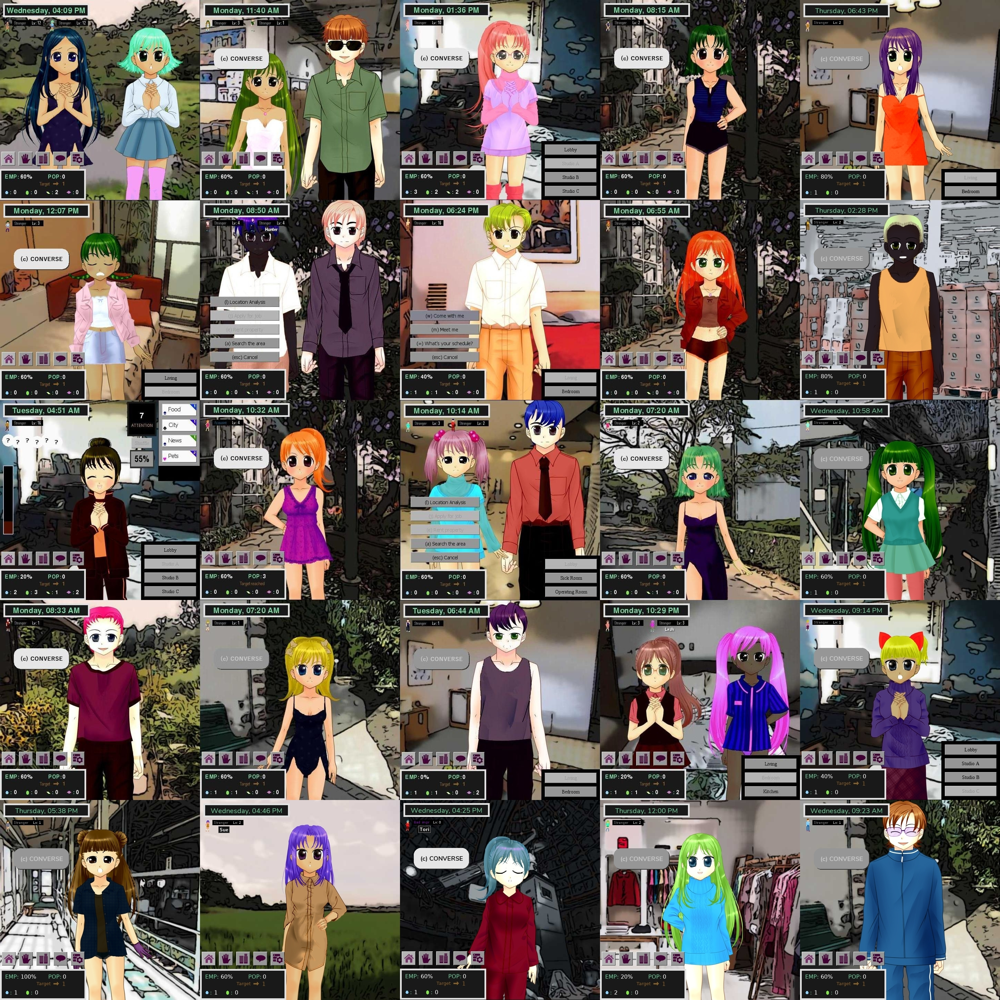

WHERE
ONE
CITIZEN
A science fiction life simulation
(with elements of role-playing games, adventure games, collectible card games, roguelikes, and visual novels)
Endless characters are waiting to meet you

Earth City. The most prestigious new metropolis built in the 23rd century. A fusion of practical modern technology with the best features, styles, and architectures of cultures long past.
For the first half-century since its establishment, none but its founding settlers were permitted citizenship.... Until the day Earth City began accepting new arrivals who could pass a screening process. Very rapidly the younger generation became the overwhelming majority of its population and began to enjoy the privileges of life in this renowned land.
However, the older generation was guarding a secret they dared not share.
For the first half-century since its establishment, none but its founding settlers were permitted citizenship.... Until the day Earth City began accepting new arrivals who could pass a screening process. Very rapidly the younger generation became the overwhelming majority of its population and began to enjoy the privileges of life in this renowned land.
However, the older generation was guarding a secret they dared not share.
About the game
A decade in development so far and expected to be perpetually incomplete (in a good way!),
Where One Citizen
has three features that are seldom or never seen in games:
{kind=link}
A true simulation
The many dozens of non-player characters have lives of their own. You can hold down the wait button and npcs will go to work, go to school, form relationships with other npcs, etc without any help from the player.
Conversation-based leveling
Character advancement is accomplished not through combat of any kind, but through conversation. Collect and upgrade an arsenal of conversation topics to use in interactions with characters.
{kind=link}
{kind=link}
Generated characters
Most significantly, the game creates not only its geography but ALL of its characters procedurally at run-time. Their visual appearance, their personalities, their familial relationships, where they live, what they do each day, and so on are all unique to each new game started.
In other words, on a new game you won't meet the same character from before.
Also features:
An open-ended system...
...but with perma-failure. The "main" story is somewhat hidden. There are endings...if you can find them.
Optional romance element
Boy x Girl
Girl x Boy
Boy x Boy
Girl x Girl
Four orientations are supported. Harem situations are possible. Additionally, you can sometimes influence relationships between npcs as match-maker or match-"breaker".
Boy x Girl
Girl x Boy
Boy x Boy
Girl x Girl
Play music you enjoy
Supply your own music from your hard drive and the game will randomly assign theme songs to the characters.
Screenshots
{kind=link}
{kind=link}
{kind=link}
{kind=link}
{kind=link}
{kind=link}
{kind=link}
{kind=link}
Start your life in Earth City.
Make a home. Make a career. Make friends. Make romances. Make a name for yourself.
NOW PLAYABLE (beta)
You may encounter bugs and crashes. Please report bugs to flowerthief00atyahoo.com.
This game is in continuous development.